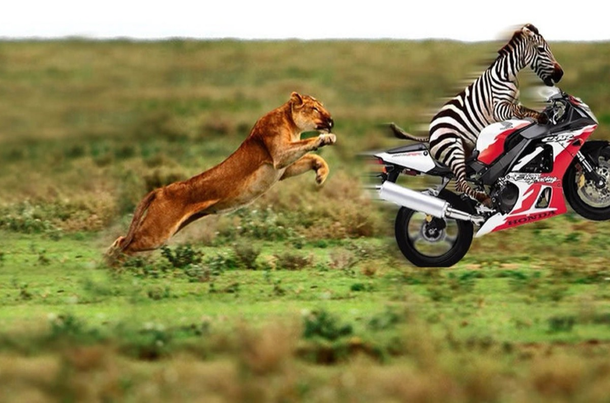

Concurs
Melcul, râma și-o lăcustă
Cârtița și c-un broscoi
Au pornit concurs pe-o pistă
Făcând mare tărăboi
Melcul că e mai buștean
Și-i hrănit cu leuștean
Cârtița e muncitoare
Cu pământul grămăjoare
Râma e momeală bună
Peștii toți la ea se-adună
Iar lăcusta fără vină
Campioană-i la prăjină
Această apreciere
O face un greiere
Plin de grije și mult sfat
Ce din fluier start le-a dat
Cu multă pricepere
Au pornit la-ntrecere
Cârtița cu melcu-n spate
Aleargă de nu mai poate
Râma-i coadă la broscoi
Lăcusta e prin trifoi
La linia de sosire
Cârtița face-o oprire
Melcul îi sare în față
Și câștigul i-l înhață!
Morala
Câștigul de te privește
Nu-i la cel ce-l pregătește
Ci la cel ce-l nimerește!
Vasile Groza